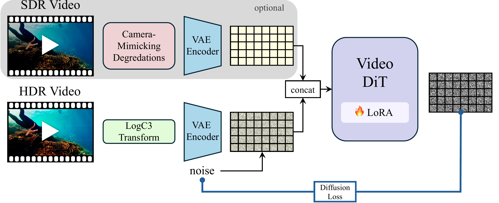
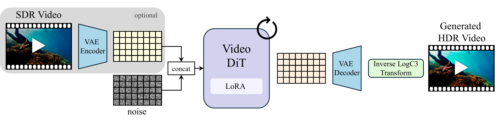

Drag the exposure slider to reveal how our HDR output preserves detail across the full dynamic range, while the SDR input clips to white or black. Use the arrow keys or click on EV ticks for fine control.
LumiVid can also generate HDR video directly from text prompts. The output is a full scene-linear EXR with real dynamic range — drag the exposure slider to explore highlights and shadows that a standard video cannot capture.
Drag the divider to compare SDR input with our HDR-graded output. The HDR version recovers highlight and shadow detail that is permanently lost in the SDR.
Full video comparisons showing SDR input alongside our HDR output, tone-mapped to reveal the extended dynamic range.
High dynamic range (HDR) imagery provides a rich representation of scene radiance, but remains challenging for diffusion models trained on bounded, perceptually compressed imagery. A natural approach is to learn a mapping from HDR data into the latent space of a pretrained diffusion model. However, this requires large HDR datasets and substantial additional training. In this work, we present a framework for SDR-to-HDR video translation and text-to-HDR video generation, leveraging the visual priors of pretrained diffusion models. We observe that applying a logarithmic encoding, commonly used in cinematic pipelines, to HDR videos produces representations that are naturally aligned with the latent space of these models. This alignment enables adapting pretrained diffusion models for HDR generation through lightweight fine-tuning, without modifying the latent space in which they operate or requiring an explicit HDR-to-latent mapping. To encourage the model to infer missing HDR content from its learned priors, we augment SDR-to-HDR training with camera-mimicking degradations that require recovering lost details. Using only lightweight adaptation of a pretrained video diffusion model, we demonstrate high-quality HDR video generation from both text and SDR video across diverse scenes and challenging lighting conditions. Our results show that HDR can be effectively modeled when its representation is aligned with the model's learned priors.

